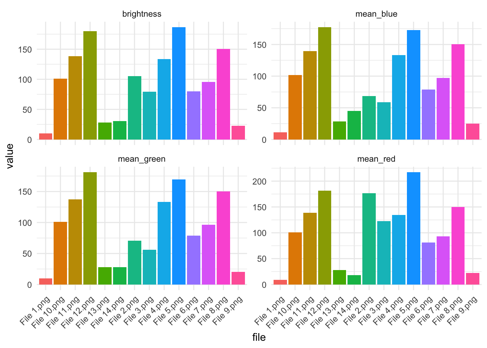
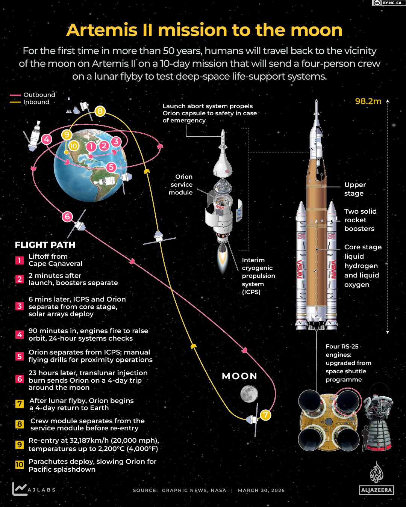
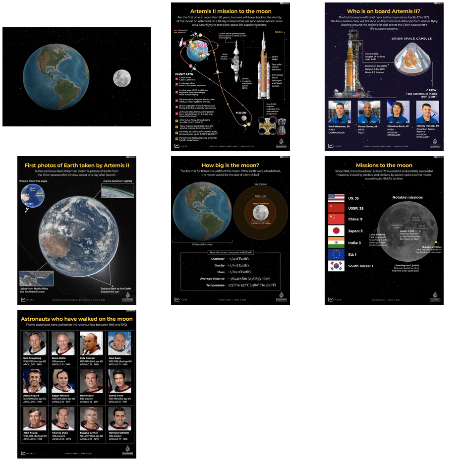
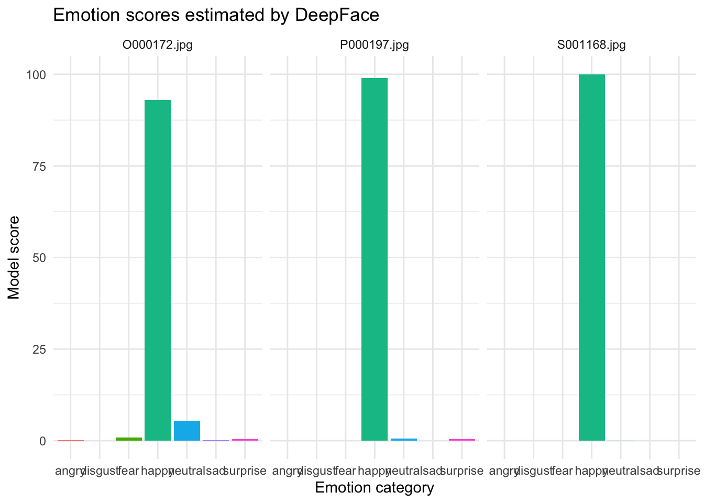

10. Image as data
Learning goals
By the end of this tutorial, you will be able to:
- Understand how images can be turned into numeric data.
- Extract simple image features such as color and brightness.
- Import images from both local folders and web URLs.
- Use DeepFace through
reticulatefor face, gender, and emotion detection. - Interpret image-analysis outputs critically and recognize their limitations.
Introduction to Image as Data
This module introduces a few beginner-friendly ways to work with images in R. We start with simple image features, then move to face detection, and finally try model-based classification tasks such as gender and emotion detection.
A useful way to think about this is that images become data once we translate visual information into numbers. For example, we can measure brightness, color, or whether a face is present in an image.
Many image-analysis tools produce model-based predictions, not ground truth. That is especially important for tasks such as gender or emotion classification.
Required Packages
You only need to install packages once. With recent versions of reticulate, you usually do not need to manually choose a Python path with use_python(). Instead, you can declare the Python packages you need with py_require(), and reticulate will usually manage a temporary Python environment automatically.
On the first run, reticulate may take a little extra time while it resolves that Python environment and installs the required Python packages.
Useful packages in this module include:
magick, which reads, displays, edits, and writes image files in Rtidyverse, which helps organize data and create plotsreticulate, which connects R to Python toolsPillow, which helps handle image files in Pythondeepface, which supports face detection and emotion analysistf-keras, which helpsdeepfacerun correctly with TensorFlow/Keras
Part 1: Working with Local Image Files
Case 1: Images stored on your computer
This first example shows how to analyze images that are already saved in a folder on your computer. You can download this folder from Canvas (image demo.zip).
We begin by telling R where the image folder is. Then we create a list of all image files in that folder.
[1] "data/image_demo/File 1.png" "data/image_demo/File 10.png"
[3] "data/image_demo/File 11.png" "data/image_demo/File 12.png"
[5] "data/image_demo/File 13.png" "data/image_demo/File 14.png"
[7] "data/image_demo/File 2.png" "data/image_demo/File 3.png"
[9] "data/image_demo/File 4.png" "data/image_demo/File 5.png"
[11] "data/image_demo/File 6.png" "data/image_demo/File 7.png"
[13] "data/image_demo/File 8.png" "data/image_demo/File 9.png" To see how many image files are in the folder:
Image features: color and brightness
Next, we create a function that reads one image at a time and calculates a few simple visual features.
Here is what each step does:
image_read()opens the image file.image_resize()makes every image the same size so the measurements are comparable.image_data()turns the image into red, green, and blue pixel values.tibble()stores the results in a clean table.
get_image_features <- function(path) {
img <- image_read(path)
img_small <- image_resize(img, "100x100!")
arr <- image_data(img_small, channels = "rgb")
arr <- as.integer(arr)
tibble(
file = basename(path),
mean_red = mean(arr[1, , ]),
mean_green = mean(arr[2, , ]),
mean_blue = mean(arr[3, , ]),
sd_red = sd(as.vector(arr[1, , ])),
sd_green = sd(as.vector(arr[2, , ])),
sd_blue = sd(as.vector(arr[3, , ])),
brightness = mean((arr[1, , ] + arr[2, , ] + arr[3, , ]) / 3)
)
}What these features mean
mean_red,mean_green, andmean_bluemeasure the average amount of red, green, and blue in the image.sd_red,sd_green, andsd_bluemeasure how much variation there is in each color channel.brightnessmeasures the overall lightness of the image by averaging the red, green, and blue values across pixels.
Now we apply the function to every image in the folder. map_dfr() means “run this function on each file, then combine the results into one data frame.”
# A tibble: 14 × 8
file mean_red mean_green mean_blue sd_red sd_green sd_blue brightness
<chr> <dbl> <dbl> <dbl> <dbl> <dbl> <dbl> <dbl>
1 File 1.png 8.68 9.64 11.1 12.2 13.3 14.9 9.81
2 File 10.png 101. 101. 102. 40.5 42.1 42.6 101.
3 File 11.png 138. 137. 139. 35.5 37.0 36.9 138.
4 File 12.png 182. 181. 177. 34.2 34.5 37.8 180.
5 File 13.png 28.0 28.1 28.4 31.5 31.1 31.0 28.2
6 File 14.png 18.3 28.2 45.3 13.6 29.8 59.3 30.6
7 File 2.png 176. 70.6 68.4 17.7 41.8 43.1 105.
8 File 3.png 123. 56.0 58.6 25.3 39.1 39.8 79.1
9 File 4.png 134. 134. 133. 49.9 50.1 49.2 134.
10 File 5.png 217. 170. 173. 29.5 66.1 65.7 187.
11 File 6.png 81.6 79 78.9 56.8 52.4 52.5 79.8
12 File 7.png 93.3 96.6 96.9 21.8 20.4 20.6 95.6
13 File 8.png 150. 150. 151. 22.7 22.8 22.5 150.
14 File 9.png 22.1 20.2 25.3 21.0 19.9 19.6 22.6 A table is useful, but plotting the features makes the differences easier to see. In the graph below, each bar is one image, and each panel is a different visual feature.
image_features %>%
pivot_longer(
cols = c(mean_red, mean_green, mean_blue, brightness),
names_to = "feature",
values_to = "value"
) %>%
ggplot(aes(x = file, y = value, fill = file)) +
geom_col(show.legend = FALSE) +
facet_wrap(~ feature, scales = "free_y") +
theme_minimal() +
theme(axis.text.x = element_text(angle = 45, hjust = 1))
These graphs show average brightness and average red, green, and blue intensity, allowing us to compare images numerically.
Part 2: Importing Images from URLs
Case 2: Importing images from a URL
Sometimes images are not stored on your computer. Instead, they are available online through a web address, or URL. In R, we can import an online image if we have the direct image URL.
A direct image URL usually ends in an image file type such as .jpg, .jpeg, .png, or .webp. This is different from an article URL. An article URL points to the whole webpage, while a direct image URL points only to the image file.
We can use image_read() from the magick package to read an online image directly into R.
In this example, we use images from an Al Jazeera visual explainer about NASA’s Artemis II moon mission. The article contains multiple graphics, such as the mission path, astronaut information, and comparisons between Earth and the moon.

If an article contains multiple images, we can store all of the direct image URLs in a vector and download them together.
For a small number of images, copying image URLs manually is often easiest. For many images, we can use web scraping tools such as rvest, but this may not work on all websites because pages store images differently or restrict automated access.
aljazeera_urls <- c(
"https://www.aljazeera.com/wp-content/uploads/2026/04/INTERACTIVE-Moon-poster-image-1775455632.png?quality=80&resize=770%2C513",
"https://www.aljazeera.com/wp-content/uploads/2026/03/Interactive_Artemis2_March30_2026-01-1774947591.png?quality=80",
"https://www.aljazeera.com/wp-content/uploads/2026/03/INTERACTIVE-Who-is-on-board-Artemis-II-1774960222.png?quality=80",
"https://www.aljazeera.com/wp-content/uploads/2026/04/INTERACTIVE-Photo-from-Artemis-II-Hello-World-1775450513.png?quality=80",
"https://www.aljazeera.com/wp-content/uploads/2026/04/INTERACTIVE-How-big-is-the-moon-Artemis-1775450509.png?quality=80",
"https://www.aljazeera.com/wp-content/uploads/2026/04/INTERACTIVE-Mission-to-the-moon-Artemis-china-india-ussr-us-1775450511.png?quality=80",
"https://www.aljazeera.com/wp-content/uploads/2026/04/INTERACTIVE-Astronauts-walked-the-moon-NASA-Artemis-1775450507.png?quality=80"
)To save the images to your computer:
dir.create("~/Desktop/aljazeera_artemis_images", showWarnings = FALSE)
aljazeera_files <- file.path(
"~/Desktop/aljazeera_artemis_images",
paste0("artemis_", seq_along(aljazeera_urls), ".png")
)
walk2(
aljazeera_urls,
aljazeera_files,
~ image_read(.x) %>% image_write(.y)
)
aljazeera_image_files <- list.files(
"~/Desktop/aljazeera_artemis_images",
pattern = "\\.png$",
full.names = TRUE
)
aljazeera_imgs <- image_read(aljazeera_image_files)
image_montage(aljazeera_imgs, tile = "3x3", geometry = "300x300+5+5")
This workflow works best with publicly accessible image URLs. If an article is behind a paywall or login page, R may not be able to read the image directly. Do not bypass paywalls; instead, use open-access images or images you have permission to use.
Part 3: Using a Public Image Dataset
Case 3: Using images from a public dataset
Here we use a public-domain collection of official photos of members of the U.S. Congress from unitedstates/images.
The next chunk builds image URLs from Bioguide IDs and downloads the files into a folder on your Desktop.
dir.create("~/Desktop/congress_images", showWarnings = FALSE)
members <- tibble(
bioguide = c("P000197", "O000172", "S001168")
) %>%
mutate(
url = paste0(
"https://unitedstates.github.io/images/congress/225x275/",
bioguide,
".jpg"
),
dest = file.path(path.expand("~/Desktop/congress_images"), paste0(bioguide, ".jpg"))
)
walk2(
members$url,
members$dest,
~ if (!file.exists(.y)) download.file(.x, .y, mode = "wb")
)Once the files are downloaded, we can list them, read one image, and display it.
[1] "/Users/howard/Desktop/congress_images/O000172.jpg"
[2] "/Users/howard/Desktop/congress_images/P000197.jpg"
[3] "/Users/howard/Desktop/congress_images/S001168.jpg"Let’s read the first image in that list into R using magick.
Because the Congress photos are now just local image files, we can reuse the same feature-extraction function from above.
# A tibble: 3 × 8
file mean_red mean_green mean_blue sd_red sd_green sd_blue brightness
<chr> <dbl> <dbl> <dbl> <dbl> <dbl> <dbl> <dbl>
1 O000172.jpg 88.5 88.6 91.1 39.7 39.1 41.1 89.4
2 P000197.jpg 114. 115. 115. 23.0 23.0 22.9 114.
3 S001168.jpg 117. 117. 118. 16.5 16.4 16.9 117. Part 4: Face Detection and Image Classification
Now we move from simple color features to higher-level computer vision tasks.
- Face detection asks: “Is there a face in this image, and where is it?”
- Emotion detection asks: “What facial expression does the model think is most likely?”
These tasks are harder than measuring brightness, and the results should be treated as model predictions rather than ground truth.
We will use Python’s DeepFace package through reticulate. With recent versions of reticulate, we can declare the Python packages we need and let reticulate resolve the environment automatically for the current R session.
We also set a writable cache folder for DeepFace because it stores downloaded model weights there.
py_require(c("pillow", "deepface", "tf-keras"))
deepface_cache <- path.expand("~/Desktop/deepface_cache")
dir.create(deepface_cache, recursive = TRUE, showWarnings = FALSE)
Sys.setenv(DEEPFACE_HOME = deepface_cache)
if (!py_module_available("deepface")) {
stop("The Python package 'deepface' is not installed yet. Run the installation chunk first.")
}
DeepFace <- import("deepface.DeepFace")Face detection
Before doing emotion detection, it helps to start with a simpler task: counting how many faces the model finds in each image.
The function below sends one image to DeepFace, asks it to detect faces, and then returns a small table with the number of faces and the model’s confidence.
detect_faces <- function(path) {
faces <- DeepFace$extract_faces(
img_path = path,
detector_backend = "opencv",
enforce_detection = FALSE
)
face_confidence <- if (length(faces) > 0 && !is.null(faces[[1]]$confidence)) {
as.numeric(faces[[1]]$confidence)
} else {
NA_real_
}
tibble(
file = basename(path),
n_faces = length(faces),
face_detected = length(faces) > 0,
face_confidence = face_confidence
)
}Now we apply the face-detection function to all Congress photos.
# A tibble: 3 × 4
file n_faces face_detected face_confidence
<chr> <int> <lgl> <dbl>
1 O000172.jpg 1 TRUE 0.89
2 P000197.jpg 1 TRUE 0.9
3 S001168.jpg 1 TRUE 0.89How to interpret these results
n_facestells us how many faces the model detected in each image.face_detectedshows whether the model found at least one face.face_confidenceshows how confident the model was about the detected face.- If all photos are official portraits, we would usually expect one face per image.
Gender prediction
We can also ask the model to predict gender categories from the face in each image. This is a classification task, but note that these are model-generated labels, not ground truth about a person’s identity.
analyze_gender <- function(path) {
result <- DeepFace$analyze(
img_path = path,
actions = list("gender"),
detector_backend = "opencv",
enforce_detection = FALSE
)
obj <- if (is.list(result) && length(result) > 0 && !is.null(result[[1]]$gender)) {
result[[1]]
} else {
result
}
tibble(
file = basename(path),
dominant_gender = as.character(obj$dominant_gender),
woman_score = as.numeric(obj$gender$Woman),
man_score = as.numeric(obj$gender$Man),
face_confidence = as.numeric(obj$face_confidence)
)
}Now we apply the gender-prediction function to the images.
# A tibble: 3 × 5
file dominant_gender woman_score man_score face_confidence
<chr> <chr> <dbl> <dbl> <dbl>
1 O000172.jpg Man 26.1 73.9 0.89
2 P000197.jpg Woman 100.0 0.00120 0.9
3 S001168.jpg Man 0.113 99.9 0.89How to interpret these results
dominant_genderis the model’s top predicted gender category for the image.woman_scoreandman_scoreshow the model’s relative confidence in each category.- These are model-generated labels, not confirmed information about a person’s identity.
- This output is useful for showing how classification works, but it should be discussed critically.
Emotion detection
The next step is emotion detection. On the first run, DeepFace may take a little longer because it may need to download model weights.
The function below asks DeepFace to estimate emotion probabilities for one image. We extract the dominant emotion plus the scores for several common emotion categories.
analyze_emotion <- function(path) {
result <- DeepFace$analyze(
img_path = path,
actions = list("emotion"),
detector_backend = "opencv",
enforce_detection = FALSE
)
obj <- if (is.list(result) && length(result) > 0 && !is.null(result[[1]]$emotion)) {
result[[1]]
} else {
result
}
tibble(
file = basename(path),
dominant_emotion = as.character(obj$dominant_emotion),
happy = as.numeric(obj$emotion$happy),
neutral = as.numeric(obj$emotion$neutral),
sad = as.numeric(obj$emotion$sad),
angry = as.numeric(obj$emotion$angry),
surprise = as.numeric(obj$emotion$surprise),
fear = as.numeric(obj$emotion$fear),
disgust = as.numeric(obj$emotion$disgust),
face_confidence = as.numeric(obj$face_confidence)
)
}Now we run the emotion model on each image and collect the results.
# A tibble: 3 × 10
file dominant_emotion happy neutral sad angry surprise fear
<chr> <chr> <dbl> <dbl> <dbl> <dbl> <dbl> <dbl>
1 O000172.jpg happy 92.9 5.49 1.17e-1 9.34e-2 4.92e-1 8.82e- 1
2 P000197.jpg happy 99.0 0.538 2.13e-3 4.48e-4 4.92e-1 4.06e- 4
3 S001168.jpg happy 100.0 0.0137 1.36e-8 4.48e-7 1.50e-7 1.81e-11
# ℹ 2 more variables: disgust <dbl>, face_confidence <dbl>A simple summary is to count which dominant emotion appears most often in the small sample.
# A tibble: 1 × 2
dominant_emotion n
<chr> <int>
1 happy 3We can also visualize the emotion scores. This plot reshapes the data from wide form to long form so each emotion becomes its own bar.
emotion_results %>%
select(file, happy, neutral, sad, angry, surprise, fear, disgust) %>%
pivot_longer(
cols = -file,
names_to = "emotion",
values_to = "score"
) %>%
ggplot(aes(x = emotion, y = score, fill = emotion)) +
geom_col(show.legend = FALSE) +
facet_wrap(~ file) +
theme_minimal() +
labs(
title = "Emotion scores estimated by DeepFace",
x = "Emotion category",
y = "Model score"
)
Smile classification
There is not a separate smile label in this workflow, but we can build a simple smile indicator using the emotion scores. Here, we classify an image as smiling when the model’s happy score is greater than the neutral score.
This is a simple rule-based classification, so it should be treated as a teaching example rather than a definitive measure.
# A tibble: 3 × 4
file happy neutral smile_label
<chr> <dbl> <dbl> <chr>
1 O000172.jpg 92.9 5.49 smiling
2 P000197.jpg 99.0 0.538 smiling
3 S001168.jpg 100.0 0.0137 smiling How to interpret these results
smile_labelis a simple rule-based classification built from the emotion scores.- If
happyis higher thanneutral, the image is labeledsmiling. - This is a convenient classroom example.
- The rule helps you see how we can turn model outputs into a new derived category.
We can also count how many images were classified into each smile category.
Summary
To wrap up:
- the color-feature sections show how images can be reduced to numeric summaries such as brightness or average color
- the face-detection section shows whether the model thinks a face is present in the image
- the emotion-detection section does not reveal a person’s true feelings; it only reports what the model predicts from the visible facial expression
- the gender and smile sections are also model-based classifications, so they should be discussed carefully and critically
- these methods are useful for demonstration and exploratory analysis, but they also have limitations and possible bias